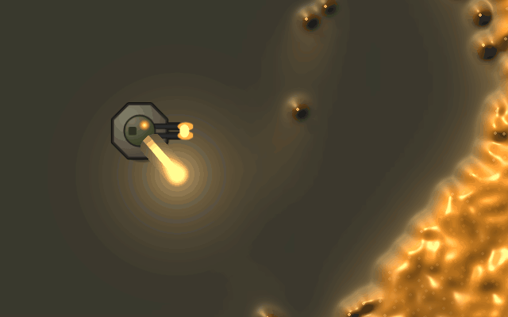
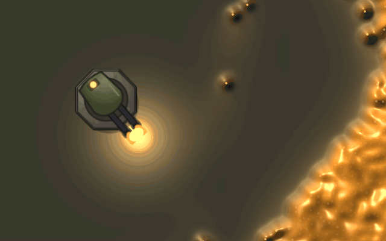
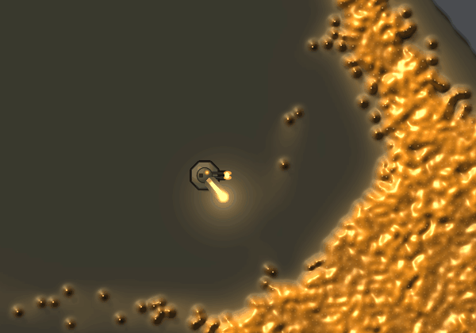
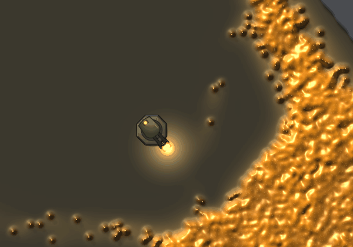
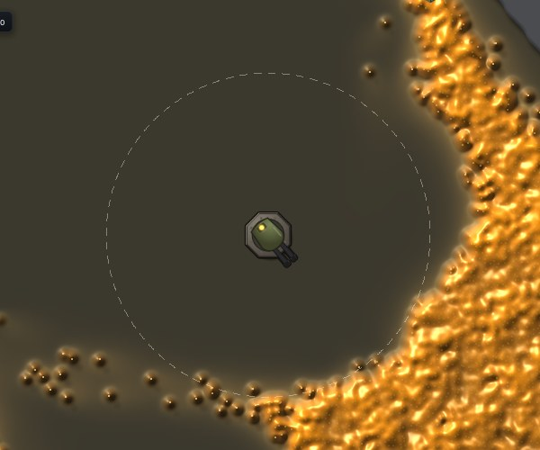
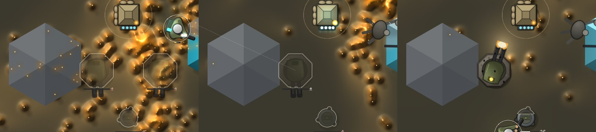

<title>Turrets That Shoot</title>
<meta name="claude:viewport-fit-sides" content="cover">
<link rel="stylesheet" href="https://fonts.googleapis.com/css2?family=Space+Grotesk:wght@500;700&family=Inter:wght@400;600&family=JetBrains+Mono:wght@400&display=swap">
<style>
/* Layout: one column of before/after pairs, the counts beside each pair. */
:root {
  --bg: #f3f1ea; --fg: #1d1c18; --muted: #5d5a50; --line: #d6d1c2; --panel: #e9e5d8; --accent: #6b7a3a;
  --display: "Space Grotesk", system-ui, sans-serif; --body: "Inter", system-ui, sans-serif; --mono: "JetBrains Mono", ui-monospace, monospace;
}
@media (prefers-color-scheme: dark) { :root:not([data-theme="light"]) { --bg: #16150f; --fg: #ece8da; --muted: #a8a390; --line: #34322a; --panel: #1f1e17; --accent: #a8b86c; color-scheme: dark } }
:root[data-theme="dark"] { --bg: #16150f; --fg: #ece8da; --muted: #a8a390; --line: #34322a; --panel: #1f1e17; --accent: #a8b86c; color-scheme: dark }
body { background: var(--bg); color: var(--fg); font: 15px/1.55 var(--body); }
main { max-width: 1100px; margin: 0 auto; padding-block: 28px 60px; padding-left: max(16px, env(safe-area-inset-left, 0px)); padding-right: max(16px, env(safe-area-inset-right, 0px)); display: grid; gap: 34px; }
h1, h2 { font-family: var(--display); text-wrap: balance; margin: 0; }
h1 { font-size: 30px; }
h2 { font-size: 20px; }
p { margin: 0; max-width: 70ch; }
.lede { color: var(--muted); }
section { display: grid; gap: 12px; border-top: 1px solid var(--line); padding-top: 20px; }
.pair { display: grid; grid-template-columns: 1fr 1fr; gap: 14px; }
@media (max-width: 760px) { .pair { grid-template-columns: 1fr; } }
figure { margin: 0; display: grid; gap: 6px; min-width: 0; }
figure img { width: 100%; border-radius: 4px; background: var(--panel); }
figcaption { font-size: 13px; color: var(--muted); }
.tag { font: 11px var(--mono); letter-spacing: .08em; text-transform: uppercase; color: var(--accent); }
ul { margin: 0; padding-left: 20px; max-width: 75ch; }
code { font: 13px var(--mono); }
</style>
<main>
  <header style="display:grid;gap:8px">
    <span class="tag">Larder World · turrets · 2026-11-14</span>
    <h1>A turret that points at what it shoots</h1>
    <p class="lede">The owner's playtest at 08:15Z: "turrets need to look better". Fork map, seed 1, one turret standing at (135, 208) from the start (<code>turret=135,208</code>), the squad idle at the larder, headless on llvmpipe at 1280×800, cropped. Left is main, right is this change. 0:06 to 0:09; the turret fires about every half second at the mould in reach.</p>
  </header>

  <section>
    <h2>Firing into the slime, zoom 12</h2>
    <p>Main: a fixed octagon with barrels to the east, smaller than a soldier; the shots leave it in any direction. Now the head turns on its base to the turret's aim, snaps down the shot's line as it fires, kicks back along the barrels with a muzzle flash and lights the ground for 0.16 s. The bullet comes out of the barrels. The amber lamp on the head's back says it has mould in reach.</p>
    <div class="pair">
      <figure><figcaption>Main · 0.7 touch radii, fixed facing</figcaption></figure>
      <figure><figcaption>This change · one touch radius, turning head, kick and flash</figcaption></figure>
    </div>
  </section>

  <section>
    <h2>The same, zoom 6</h2>
    <p>At zoom 6 the turret is drawn at least 11 pixels across its radius, with the soldier's dark outline and rim light, so it reads beside the squad.</p>
    <div class="pair">
      <figure><figcaption>Main · zoom 6</figcaption></figure>
      <figure><figcaption>This change · zoom 6</figcaption></figure>
    </div>
  </section>

  <section>
    <h2>Its reach, and its states</h2>
    <p>Left: hovering a turret (or placing one) shows its reach, 15 cells, as a faint dashed ring; buildings can't be selected, so hovering stands in for it. Right, the build hand at zoom 12, 0:16, 0:24 and 0:40: two ghosts rising as cream plans with the progress bar over their barrels, then one standing, scorched where the mould wore it, turned north and firing. A third lamp colour, red with the head greyed, shows when the bank can't pay for a shot; shots are free today, so it doesn't appear in play.</p>
    <div class="pair">
      <figure><figcaption>Hover · reach ring, zoom 6</figcaption></figure>
      <figure><figcaption>Build hand · rising, rising, standing and firing</figcaption></figure>
    </div>
  </section>

  <section>
    <h2>Cost</h2>
    <ul>
      <li>llvmpipe, paired <code>bench=30 hand=build</code> (two turrets on screen), main then this change, twice: GPU tail p50 69.1 → 65.1 and 67.0 → 69.5 ms, frame p50 88.2 → 83.0 and 86.5 → 88.6 ms. No measurable cost; the 1070 timing waits for the PC.</li>
    </ul>
  </section>
</main>
